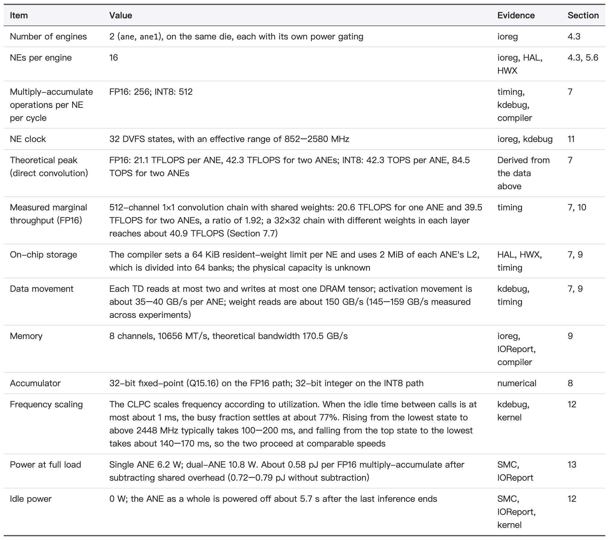
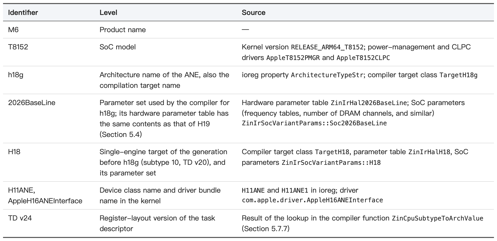
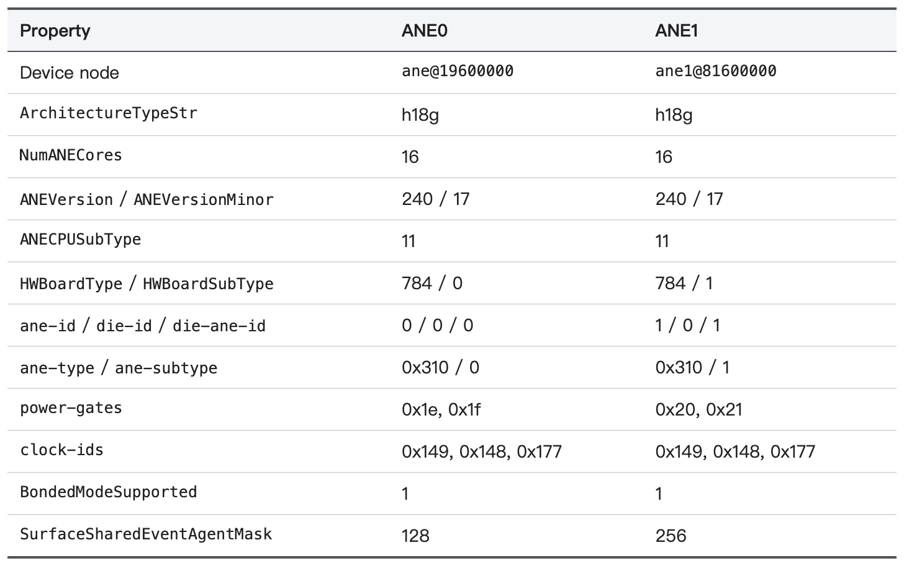
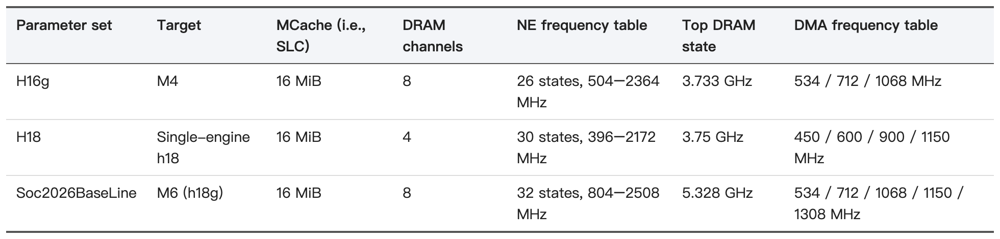
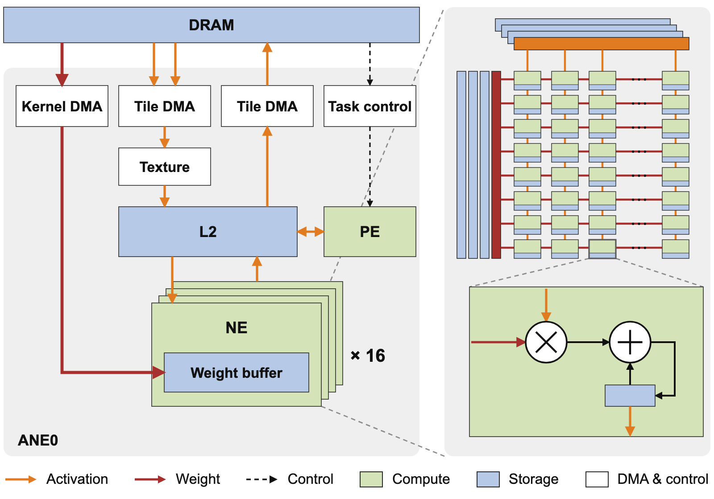
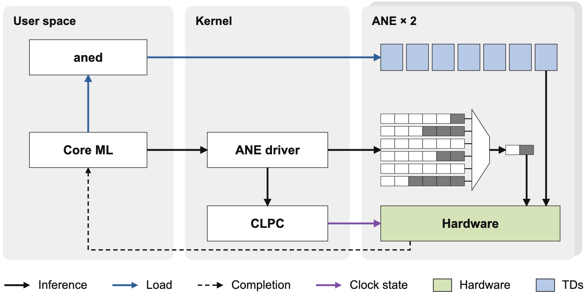
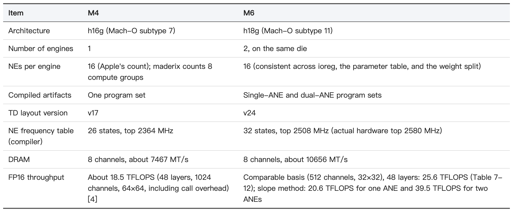

This post is chapter 4 of the report "Microarchitecture of the Apple M6 Neural Engine: An Empirical Study Based on Compiled Artifacts, Execution Traces, and Power Measurements", reproduced unchanged. Full report: web; data and tools: GitHub. Section, figure and table numbers follow the report.
This chapter presents the overall structure of the M6 ANE as a reference for the chapters that follow. The arguments in this chapter rely mainly on device-tree (IORegistry) information, the hardware parameter tables built into the compiler, and compiled artifacts. The detailed measurements and analyses are developed in Chapters 5–13. In summary, the M6 integrates two complete ANEs, each containing 16 NEs. The two ANEs are located on the same die and each has its own power gating, but in the observations of this report the two are always powered on and off together (Section 12.5). The compiler generates two programs for every model, one single-ANE and one dual-ANE, and the runtime selects one of them for execution. The DVFS state of the ANE is adjusted by the CLPC in the host kernel according to utilization. We have found no evidence that the ANE itself or its firmware participates in selecting the state (Section 6.4).
4.1 Principal Parameters
Table 4-1 summarizes the principal parameters measured or derived in this report, and it indicates the evidence category and the section in which each is discussed in detail. The row "theoretical peak" is obtained by multiplying the number of multiply-accumulate operations per NE per cycle, the number of NEs, and the clock frequency at full load. The row "measured marginal throughput" is obtained from the slope of time against layer count for a fixed shape with varying layer count, and it does not include the fixed overhead of each call.
Table 4-1. Principal parameters of the M6 ANE

4.2 Naming Hierarchy
The ANE of the M6 appears under different names at different levels of the system. These names belong to six levels: product, SoC, ANE architecture, compiler parameter set, kernel driver, and instruction format. The names are easily confused. Table 4-2 lists the meaning of each name and where it appears.
Table 4-2. Identifiers associated with the M6 ANE

Two points need to be noted. First, although h18g and H18 have similar names, they are two distinct targets in the compiler. The constructor of TargetH18g calls Soc2026BaseLine rather than the SoC parameters of H18, and its hardware parameter table is ZinIrHal2026BaseLine rather than ZinIrHalH18. By the compiler's ArchCompareValue, H18 (subtype 10, TD v20) has the value 9, whereas h18g and h19 (subtype 11, TD v24) have the value 10. The H18 parameter set therefore describes the single-engine target of the previous generation, not a single-engine version of the M6 generation 〔compiler〕. Second, the "H11" and "H16" in the driver class names are inherited from earlier products and do not indicate the hardware generation. The hardware generation should be determined from ArchitectureTypeStr (h18g) and the TD layout version (v24) 〔ioreg, compiler〕.
4.3 Dual-Engine Design
In the IORegistry device tree, the M6 has two parallel ANE device nodes. Under each node, there are, in sequence, an ASC wrapper layer (AppleASCWrapV8ANE), a firmware coprocessor proxy running RTKit (RTBuddy(ANE) and RTBuddy(ANE1)), and an ANE device object (H11ANE and H11ANE1, both of class H11ANEIn). Both devices are managed by the same kernel driver bundle. The two share one address translation unit node, dart-ane@19800000, which has nine mappers in total: mapper-ane, mapper-ane-iso1 through mapper-ane-iso7, and mapper-ane-mpm. Table 4-3 compares the main properties of the two devices (data: m6_ioreg_ane_20261002.md) 〔ioreg〕.
Table 4-3. Properties of the two ANE devices

Four conclusions follow from Table 4-3. First, the die-id of both ANEs is 0, and their die-ane-id values are 0 and 1, which indicates that they are on the same die rather than stitched together from two dies. Second, their power-gates differ, which indicates that their power can be gated separately. In our experiments, when only one ANE executes tasks, the other is also briefly powered on, and the power-off timing of the two is synchronized. The basis for this is the firmware-processor states and kernel driver logs of both ANEs recorded during idle periods (Section 12.5). Third, their clock-ids are identical, which indicates that their clocks have the same source. However, in the CLPC, each ANE has an independent performance domain (8 for ANE0 and 29 for ANE1), and the corresponding frequency tables voltage-states8 and voltage-states29 in the device tree each have 32 states with identical contents. Fourth, ANECPUSubType is 11 for both, which is the same as the Mach-O CPU subtype of h18g compiled artifacts (Section 5.5). This is consistent with the M6 executing h18g-format programs 〔inferred〕. The values of SurfaceSharedEventAgentMask (128 and 256) each occupy one bit on the two devices. We speculate that they distinguish the originator of each shared event 〔inferred〕.
Each ANE contains 16 NE units, which is shown in three respects. First, the ioreg property NumANECores has the value 16. Second, the field at offset 0x00c in the compiler parameter table is read by the functions DetermineNumNesToUse, ComputeOcgSize, and ComputeNumActiveCoeffDMA, and it gives the number of NEs per ANE. This field is 2 on the compiler target M9 (the A11 phone chip), 8 on H11 and H12, and 16 from H13 onward. Third, in the compiled artifact, the weights of each layer are split into exactly 16 parts, one per NE (Section 5.6) 〔ioreg, HAL, HWX〕. maderix [4] concluded from the "8 compute groups" in the parameter table that the ANE of the M4 consists of 8 compute units. In this version of the compiler's parameter table, the field with the value 8 (at offset 0x014) is read by ComputeMaxOcgSize and HasAccDoubleBuffering. It indicates the accumulator depth of each NE rather than the number of NEs. The relationship between this field and output-channel grouping is discussed in Chapter 7 〔HAL〕.
4.4 Platform Parameters in the Compiler
The compiler has a built-in set of SoC parameters for each target, which are used by the performance model and by memory allocation. Table 4-4 lists the Soc2026BaseLine parameters used for the M6 and compares them with those of the M4 (H16g) and with H18, the single-engine target of the previous generation (subtype 10, TD v20) (data: socfreq*.txt under data/09_clock/; tool: socfreq.c) 〔compiler〕.
Table 4-4. SoC parameters built into the compiler

The top DRAM state of the M6 is 5.328 GHz, which corresponds to about 10656 MT/s at double data rate. The theoretical bandwidth of eight 16-bit channels is about 170.5 GB/s, which is consistent with the record of eight DCS (DRAM channel) entries in the device tree (Chapter 9). The first 24 states of the compiler's NE frequency table are identical to the frequency table in the device tree, but the last eight differ. The top state of the compiler is 2508 MHz, while that of the device tree is 2580 MHz. Section 11.2.2 fits the full-load frequency to the steps in kdebug task duration during frequency ramp-up. The result agrees with the device-tree top state of 2580 MHz and not with the compiler's top state of 2508 MHz, from which we infer that the compiler's frequency table is used only for its performance model 〔inferred〕. The "DMA frequency table" in the table is the compiler's internal name (function GetValidDMAFrequencies). Section 11.4 infers, from the fact that the frequency table of the Fabric DVFM module in the CLPC driver contains exactly the same five values, that the table actually describes the five frequency states of the SoC fabric.
4.5 Structural Diagrams
Figure 4-1 and Figure 4-2 are structural diagrams drawn from all results of this report. Figure 4-1 shows the hardware organization and data paths, and Figure 4-2 shows how an inference request travels from the application through system services, the kernel driver, and ANE firmware to the hardware. The values and positions of the components in the diagrams are determined to different degrees. The multiply-accumulate width, bandwidth, and clock states come from measurement. The 2 MiB of L2 and the 64 KiB per NE are the amounts used by the compiler, not physical capacities. The placement of L2 in the clock domain of the shared cluster is inferred. Figure 4-1 shows only the components and the direction of data flow; these values and their degree of certainty are given in the caption and the text. Below, Figure 4-1 is explained first in four aspects (computation, data movement, dual-engine cooperation, and clocks and power), and the control path is then described with reference to Figure 4-2.

Figure 4-1. Hardware structure of the M6 ANE. Left: the organization of ANE0. ANE1 has the same structure, and the two ANEs share DRAM (170.5 GB/s theoretical). Kernel DMA writes weights directly into the weight buffer of each NE without passing through L2; weight reads by the two ANEs total about 150 GB/s. Tile DMA reads and writes activations through L2 at about 35–40 GB/s per ANE. The PE performs elementwise operations and table lookups, and the 16 NEs run at 852–2580 MHz. The position and function of the texture sampling unit are inferred. Right: one NE, enlarged. In each cycle, the activations of one input channel (orange slice) are broadcast along the columns, and the corresponding column of the weight buffer (dark red) is broadcast along the rows, for 256 FP16 multiply-accumulates in total. The array is drawn as 8 output channels × 32 pixels; the actual shape changes with the number of pixels (Section 7.3.4). The enlarged cell below shows that each multiply-accumulate unit adds its product into its own Q15.16 accumulator.
In terms of computation, the 16 NEs form a multiply-accumulate array, and each NE completes 256 FP16 multiply-accumulate operations or 512 INT8 multiply-accumulate operations per cycle. The compiler sets a resident-weight limit of 64 KiB per NE. In FP16 mode, each NE computes at most 16 output channels per pass, so the 16 NEs compute at most 256 per pass. When the number of output channels increases from 256 to 272, an additional pass is required, and the latency shows a clear step (Section 7.3.2). Elementwise operations are performed by the separate PE. In the programs tested in this report, no overlap was observed between PE operations and multiply-accumulate operations when they belonged to different TDs (Chapter 6). The activation function is implemented by a 33-point lookup table with linear interpolation. The accumulator of the FP16 path is in fact a 32-bit fixed-point number (Q15.16), and the accumulator of the INT8 path is a 32-bit integer. This determines several numerical behaviors of the ANE. For example, the accumulation becomes infinite once its absolute value reaches 32768 (Chapter 8).
In terms of data movement, the Tile DMA moves activations. Each TD has at most two input paths and one output path, and the two input paths share a bandwidth of about 35–40 GB/s. The Kernel DMA moves weights; each NE has its own set, and the weight-read bandwidth is about 150 GB/s. Intermediate results between layers are stored in the L2 of each ANE, which the compiler uses as 2 MiB. The L2 is divided into 64 banks, and the compiler pads the row stride of tensors to avoid bank conflicts. Below the L2 are the system-level cache (SLC) and an 8-channel DRAM. On the default Core ML path, weight reads do not use the SLC (Section 9.3.3).
In terms of dual-engine cooperation, the compiler generates both a single-ANE (nonbonded) and a dual-ANE (bonded) program for each model. A cost model decides whether to split subgraphs across the two ANEs, and the split is either spatial (by rows, or by columns when the height is 1) or by output channels. When executing on two ANEs, the two ANEs of a row split each read a complete copy of the weights, whereas in an output-channel split each reads half of them, and the two share the DRAM bandwidth. As a result, compute-bound networks obtain a speedup of about 1.92×, whereas weight-read-bound networks gain little: about 1.4× for convolution chains with different weights in each layer, and no speedup with row splitting (Chapter 10).
In terms of clocks and power, the NE clock of each ANE has 32 states, with an effective working range of 852–2580 MHz, and the state is selected by the CLPC. The PE clock is scheduled independently of the NE clock. The CLPC contains a further "shared cluster" that is shared by the two ANEs, and we speculate that the PE and L2 are located in it. The absolute frequency of this clock cannot be read. It is known to ramp up slowly and to be pulled down when the GPU is busy. The SoC fabric has five frequency states (Chapter 11). At full load, the power of a single ANE is 6.2 W and that of the dual-ANE configuration is 10.8 W. At idle, the power is 0 (Chapter 13).

Figure 4-2. From software invocation to hardware execution. The three regions, from left to right, are user space, the kernel, and the ANE; the two ANEs have the same structure, and only one is expanded. Blue lines show the loading path, taken once per model: the E5 segmenter of Espresso passes only the ANE segments to aned for compilation, and the output is a TD sequence for each ANE. Black lines show the inference path, taken on every call: the request does not pass through aned; the kernel driver maps its priority, selects the ANE and the single-ANE or dual-ANE program, and hands it to the firmware inside the ANE. The firmware queues requests by six priority levels (the six queues on the left), and an arbiter moves them into the two-slot hardware task queue, from which the hardware executes the TD sequence in order. The purple line is the clock state set by CLPC, and the dashed line is the completion interrupt. In a synchronous call, submission takes about 30 µs and completion about 130–325 µs, and the ANE is idle for about 384 µs between two adjacent tasks (Chapter 6).
On the control path (Figure 4-2), a model first passes through Espresso, the Core ML runtime framework. At load time, the E5 module of Espresso uses the segmenter to select an ANE or CPU backend for each operation, and only the ANE segments are handed to the compiler service of the daemon aned for compilation. The compilation results are cached by process name (Section 5.9). At inference time, requests are submitted through Espresso and the AppleNeuralEngine framework to the kernel driver. According to the observation of maderix [4] on the M4, they do not pass through aned (Section 6.2). The ANE compiler translates each layer of the network into one or more TDs. Each TD is a sequence of register writes with a header, and the program of each ANE is a TD sequence whose order is scheduled by the compiler (Chapter 5). In the programs tested in this report, no overlap was observed between mutually independent TDs either (Chapter 6).
After an inference request reaches the kernel driver, the driver maps the priority of the request, selects which ANE to use and whether to use a single-ANE or dual-ANE program, and throttles the request when necessary. The request is then passed to the firmware in the ANE. The firmware queues requests in six priority levels and places tasks into the hardware task queues, each of which has two slots. Based on firmware strings, we infer that a high-priority task can preempt a low-priority task that is executing. The hardware fetches TDs from the queue, decodes them, and writes the register values into the configuration of each functional unit. Each call has a fixed host-side overhead: submission takes about 30 µs, and completion notification takes about 130–325 µs. Under the synchronous call mode, the ANE is idle for about 384 µs between two consecutive calls (Chapter 6). The CLPC, which determines the ANE's DVFS state, is not inside the ANE but in the host kernel (Chapter 12).
4.6 Comparison with the M4
Table 4-5 compares the ANEs of the M4 and the M6. The data in the M4 column are taken from maderix [4] and from this report's control experiments on the M4.
Table 4-5. Comparison of the ANE on the M4 and the M6

The largest change in the M6 relative to the M4 is the addition of a complete second engine, and the resulting compilation scheme of "one model, two programs." The remaining aspects, including the TD mechanism, 16 NEs per engine, and the fixed-point accumulator, are inherited from the M4. We repeated the basic numerical tests of the FP16 multiply-accumulate path from Chapter 8 on the M4, and the results were the same as on the M6. A complete comparison across product generations is given in Chapter 15.
4.7 Summary
The ANE of the M6 consists of two engines with identical structure, each with its own power gating. Each engine contains 16 NEs. The two sit on the same die and share one address translation unit. The compiler describes this platform with the 2026BaseLine parameter set, and its NE frequency table is inconsistent with the actual hardware frequency table in the top eight states.
This chapter gives only an outline of the structure. Two points recur in later chapters and merit noting at the outset. First, two engines do not mean twice the speed. Whether a single request can use the second engine is decided by the compiler (Chapter 5), how multiple requests are distributed is decided by the driver (Chapter 6), and the actual speedup obtained depends on whether the workload is limited by resources shared by the two engines (Chapter 10). Second, the running speed of the ANE depends to a large extent on the host side. The DVFS state is selected by the CLPC in the host kernel, and the more sparsely the host submits requests, the lower the state to which the ANE is assigned (Chapter 12). All measurements in this report were performed on one M6 with 16 GB of memory and one macOS version. Under other memory configurations or system versions, the DRAM states and compiler policies may differ. The usage recommendations derived from these structural characteristics are given in Section 15.2.
References
[4] maderix. Inside the M4 Apple Neural Engine, Part 4: The Complete Machine. https://maderix.github.io/articles/inside-the-m4-ane-part-4/, 2026.